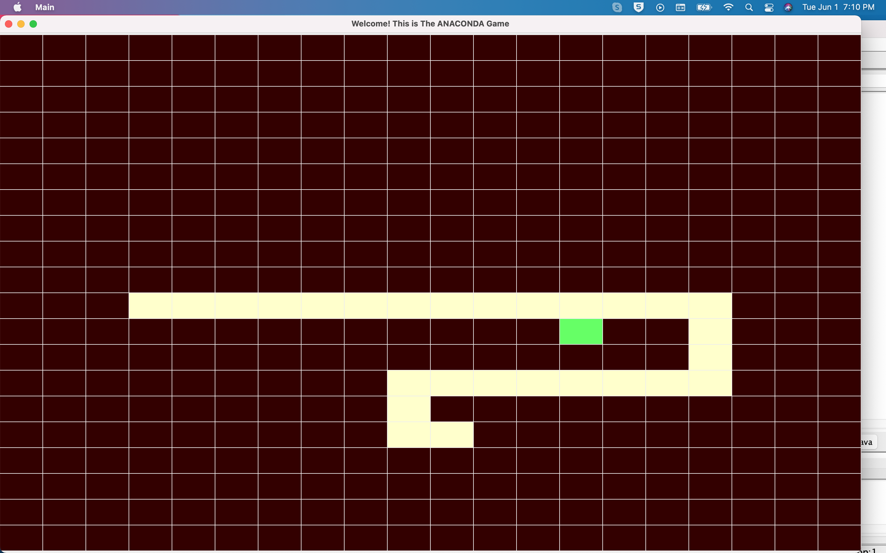
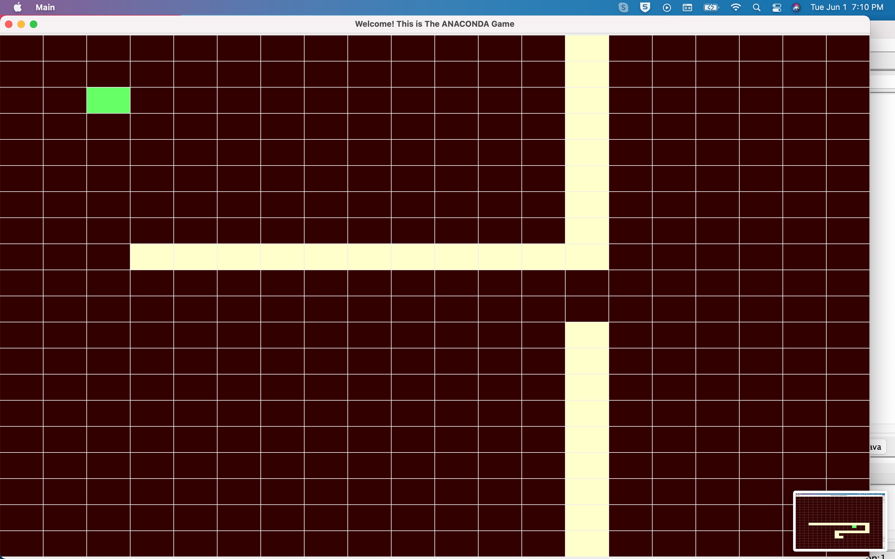

Tai buvo vienas iš mano kelių pirmųjų arkadinių žaidimų, prie kurių dirbau pradžioje.
Pirmiausia, kaip matote, tai yra visi vaizdai, kuriuose rodomas kodas, kuris buvo naudojamas kuriant Gyvatės žaidimą.
Pirmasis kodo elementas pirmame paveikslėlyje yra klasės pavadinimas: „Pagrindinis“ - tai pagrindinė klasė, vadinama vienetu visoms kitoms klasėms, vykdant kitose klasėse atliktas funkcijas.
Susideda iš tikrojo žaidimo lango, kurį mes vadiname „lenta“ ir kuris nėra objektas
Tada mes turime pasveikinimo pareiškimą ir numatytąją išėjimo operaciją, kuri reiškia žaidimo uždarymą, kai išeiname
Kaip minėjau anksčiau šioje klasėje, kuriame žaidimo lentą gyvatei.
mes naudojame importą, kad įvestume įrankius, tokius kaip maketavimo įrankis Tinklelis, raktų identifikavimo ir judėjimo įrankis bei masyvo išdėstymas lentoje. Visa tai įtraukta į rėmelį
Norėdami nustatyti lentos plotį ir aukštį sveikuosius skaičius, naudojame masyvų sąrašą.
Turime tokius skaičius kaip 2 x 2 ir 20 x 20, kad padidintume tinklelio dydį. Tam mes naudojame kilpą, kad išplėstume savo išdėstymą.
Ši klasė, kaip matote, reiškia net blokavimą int x ir int y.
mes naudojame int kaip x ir y, kad gautume atstumą tarp kiekvieno bloko.
Gyvatės spalva mes vadiname pirmąją myColors1
ir mūsų skydelis, kuris yra žaidimo lentos išdėstymas, yra kelių kvadratų.
Mes naudojame kvadratus, kad galėtume suskirstyti savo tikslus, pvz., maistą, gyvatę ir judėjimą į skaičių blokus.
Norime sukurti atvejus, kai savo raktinius jungiklius organizuojame savo judėjimą ir pasukimą gyvatėmis.
Ši klasė yra gana ilga, nes ji orientuota į lentos kvadratinį pasiskirstymą, taip pat į gyvatės dydį, kaip matote, kuris yra 3, bet tai yra pradinis dydis, o tai reiškia, kad jis augs kaskart, kai valgys „Cue FOOD“.
Taip pat nustatėme funkcijų metodą, vadinamą run (), ir tai yra tiesa visais atvejais, tai reiškia, kad jis pristabdys žaidimą ir paleis kitą funkciją, kuri bus naudojama tam tikram žaidimo veiksmui atlikti.
Kaip matote šioje klasėje, gyvatės judėjimas ir padėtis grindžiama kilpa, kurią naudojame gyvatės dydžiui padidinti, kai gyvatė pasiekia maisto bloką. jei jis pasiekia maisto bloką, jo dydis padidėja, todėl žaidimas tampa visiškai kitoks ir dar sunkesnis.
Jame pagrindinis dėmesys buvo skiriamas fono spalvai, kaip matėte anksčiau, kai į šią klasę kreipiamasi, judėjimui pakeisti naudojama fono spalva. Šis „SquarePanel“, kuris yra objekto pakeitimas (repaint ()) Kai vadiname „repaint“ (), žinome, kad jis susijęs su fono spalva.
Jei pastebėjote, galite pamatyti, kaip gyvatės uodega didėja, nes mes to norėjome, kai ją įrašėme į kodą.
Toliau galite pamatyti, kaip pasikeitė mūsų atlikto judesio dydis ir kaip sunku naršyti erdvėje, kuri yra gana ribota.


Mūsų žaidimas baigiamas baigiamuoju pranešimu, pranešančiu mums, kad ANACONDA SUSIDĖJO! Žaidimas baigtas
Tai buvo „Snake Game“ kūrimas „Java“ programoje.
Dėkojame!